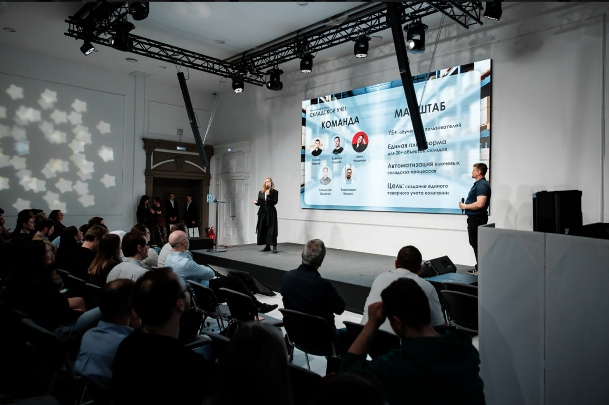
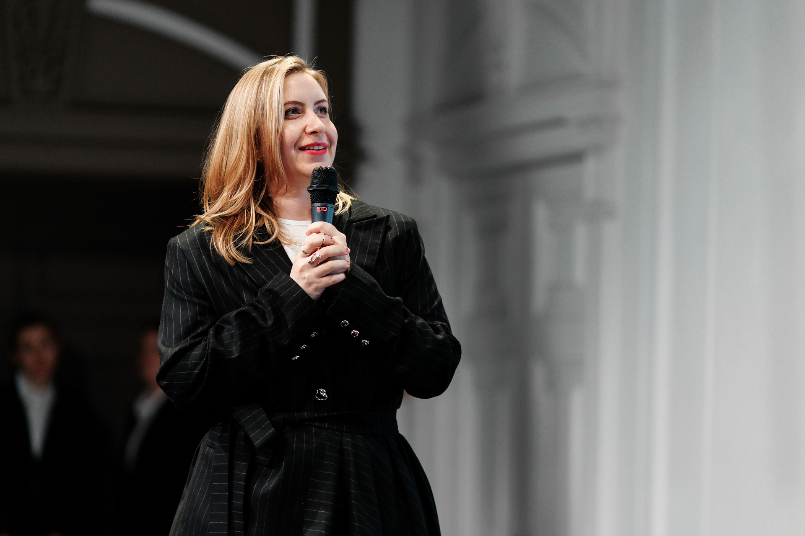

2025 — сейчас
Sminex / ведущий системный аналитик 1C
Склад, закупки, производство, внеоборотные активы, интеграции, функциональный дизайн, карта процессов и запуск решений в реальную эксплуатацию.
Персональный сайт / профессиональное портфолио
Я знаю девелопмент не с презентаций, а изнутри: от сметного и договорного контура до глубокого складского и товарного учета. От проектирования сложных процессов и интеграций до внедрения решений, которые реально выдерживают живую эксплуатацию.
Сильная сторона моей аналитики не только в логике. Я умею переводить язык бизнеса на язык разработчиков, держать высокую когнитивную нагрузку и выстраивать процессы так, чтобы система помогала людям, а не ломала их.
Мой путь
Моя сила в том, что я пришла в системную аналитику не с абстрактной стороны. Я прошла путь через стройку, договоры, склад, документы, первичку, сметы, внедрение и обучение пользователей. Поэтому я понимаю не только систему, но и реальность, в которой она живет.
Я знаю, как выглядит бизнес-процесс на бумаге, в системе и в руках конкретного человека.
Склад, закупки, производство, внеоборотные активы, интеграции, функциональный дизайн, карта процессов и запуск решений в реальную эксплуатацию.
Закупочные сервисы, аккредитация контрагентов, автоматизация тендерных и нетендерных закупок (АНЦТ, СЗ), сквозной бюджетный контроль по статьям и выстраивание прослеживаемости в корпоративном контуре.
Складской учет, цифровизация, описание бизнес-процессов, внедрение 1C-решений для строительного бизнеса и переход от операционного знания к системной архитектуре.
Сметы, КС-2, КС-3, договоры, материалы, аналитика затрат и практика, которая дала мне настоящую глубину понимания стройки изнутри.
Hard skills & экспертиза 1C
Я не пишу документацию ради документации. Моя работа — собрать сложную предметную область, спроектировать логику, выстроить взаимодействие систем и людей и довести решение до состояния, в котором оно работает стабильно и понятно.
Корпоративные конфигурации и платформенные контуры, в которых я проектирую учетную логику, интеграции и устойчивую эксплуатацию процессов.
Эмпатия, точная коммуникация, умение переводить сложное на человеческий язык и удерживать конструктив там, где проекту легко сорваться в напряжение.
Главные кейсы / масштаб проектов
Ниже — не список обязанностей, а реальные узлы сложности: запуск складского учета, обучение большого числа пользователей, параллельные контуры ТМЦ, интеграции, бюджетный контроль и процессы, где надо одновременно держать бизнес, ИТ и эксплуатацию.
Автоматизация складского и производственного контуров для ряда крупных девелоперов: от проектирования логики ТМЦ до внедрения процессов, устойчивых в живой эксплуатации.
Разработка и внедрение логики учета высвобождаемых материалов (бытовок, дорожных плит, лесов) и автоматизация физических складских операций.
Развитие контура тендерных и нетендерных закупок (АНЦТ, служебные записки), а также выстраивание прозрачной логики согласований и контроля бюджета в 1С.
Сопровождение сметно-договорного контура крупного инфраструктурного проекта. Бизнес- и системный анализ для веб-разработки внутреннего продукта «Темплан».
Проектирую сложные интеграции и перевожу их на язык бизнеса. Успешный опыт презентации масштабных IT-продуктов, разработанных с нуля (включая контур складского учета Sminex), перед стейкхолдерами и IT-департаментом. Выравниваю ожидания между разработкой и бизнесом, обосновываю архитектуру и делаю системы прозрачными для пользователей.


Развитие и повышение квалификации
Я последовательно усиливаю три слоя своей базы: методологию и финансово-сметную дисциплину, управление строительными процессами и профессиональную экспертизу в экосистеме 1C.
Дипломы и курсы по сметному делу, бухгалтерскому учету, финансовой аналитике и системному анализу. Это тот фундамент, который позволяет мне видеть за системой реальные деньги, материалы и бизнес-логику.
Обучение по Plan-R, управление строительными проектами и практическое понимание тематического планирования. Это усиливает мою системную оптику именно в девелопменте и стройке.
Подтвержденная квалификация по платформе 1C и множественные курсы повышения квалификации по архитектуре и подсистемам 1C.
Искусственный интеллект
Моя практика системного аналитика 1C интегрирует искусственный интеллект не как замену, а как рабочий экзоскелет. Он расширяет мои аналитические и проектные мощности, помогает глубже заходить в сложные архитектурные задачи и сокращает время на рутинные этапы без потери качества.
Подход, который я развиваю, строится на синтезе глубокой архитектурной экспертизы в 1C и современных методов оркестрации ИИ. Это позволяет мне точнее проектировать сложные системные ландшафты, глубже разбирать бизнес-процессы и выдавать решения с большей детализацией и дальновидностью.
Для меня ИИ — это не декоративная модность и не попытка подменить профессию. Это рабочая среда, в которой можно быстрее проверять гипотезы, усиливать ясность проектирования и высвобождать время для тех частей системного анализа, где особенно важны контекст, ответственность и человеческое понимание предметной области.
Быстро создаю концептуальные модели и прототипы решений, чтобы оперативно проверять гипотезы, визуализировать изменения и добиваться точного попадания в требования. ИИ помогает собирать стартовые структуры, адаптировать подходы и находить рабочие варианты реализации в контуре 1C.
Использую разные модели как систему экспертов по экспертам: каждая закрывает свой слой анализа, а затем я интегрирую выводы в единый результат. Такой подход даёт большую точность, глубину и позволяет удерживать нюансы, которые легко потерять при линейной работе.
Применяю ИИ для парсинга и предварительного анализа данных, проверки соответствия корпоративным стандартам и реверс-инжиниринга. Это снимает с аналитика повторяющуюся нагрузку и высвобождает ресурс на сложную архитектуру, системное проектирование и принятие сильных решений.